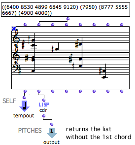

Patches
The " value" of a patch is produced by the patches itself, but this value has to be expressed in the maquette. The Tempout is a specific outlet which allows to express this value. "Tempout" stands for "Temporal Output".
The TempOut
| The Tempout is used for expressing the musical value of the patch within the maquette. |
- When a patch is created directly in a maquette, a tempout is automatically added in its internal editor.
- If a patch is dropped in the maquette editor, this box can be added manually.
To add a tempout :
|  |
TemporalBoxes representing instances, global variables or factory boxes only have one standard output , as a matter of course, since they are a value.
TemporalBoxes representing maquettes only have standard inputs and outputs, their potential musical value being expressed by the maquette itself.
Sub patches don't have to be integrated in the musical structure of a maquette to be used there. Therefore, a Tempout can be deleted. To display and express the value of the object, though, a connection to a Tempout still remains necessary.

This patch can return / get data to / from other boxes via its inputs and outputs.
Setting the TempOut Value
The value of a sub patch is the value connected to the Tempout . The user can select the value(s) to express in the maquette.

In the upper TemporalBox :
|  |
 | The value of the lower TemporalBox is calculated from the resulting list :
|
The Tempin / Self Input Box
A patch created directly in a maquette has another default box : the Tempin , or Self Input Box .
| The Tempin , or Self Input Box allows to control and use the relation between the patch and the maquette wherein it is located as programming parameters . Hence, the Tempin is not compulsary for using a patch within a maquette, and can be deleted. |